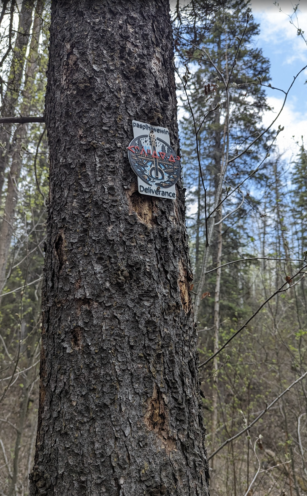

"Deliverance — 'the saving / rescuing of people', the abstract noun of paspîhiwêw 's/he saves people'."

Wall crop of the Deliverance plaque: SRO 'paspîhiwewin' / syllabics ᐸᐢᐲᐦᐃᐍᐏᐣ above a banjo+bridge motif with blue water flowing beneath.
In MTB vernacular a trail earns the name Deliverance by where it puts you and by what it asks of you to get out. On the wall, Deliverance sits paired with Purgatory — the same flame‑palette pivots into a wider banjo‑and‑bridge medallion, a winding pool of blue water threading underneath the bridge's pilings. The banjo is the John Boorman Deliverance reference (the 1972 film, the duelling‑banjos river); the bridge under it is the engineering of getting out alive. Black field, silver bridge, blue water, red Cree syllabics floating across the bridge deck — the design reads as a single rescue tableau.
The Cree carved onto the plaque, paspîhiwêwin, is the abstract noun of paspîhiwêw 's/he saves people' (itwêwina/Wolvengrey). The Plains Cree dictionary glosses it simply: rescue, saving people, deliverance, vindication. The same root paspî‑ 'slip through, escape, get out alive' is what makes paspiw 's/he survives' and paspâpiw 's/he peeks out through a hole' — the morpheme that runs through the whole family is the idea of getting through a narrow opening. That is also the literal shape of the trail: Patricia Ravine Upper, the black‑diamond singletrack threading through the steep, narrow ravine on Edmonton's west side.
Geographically the trail is the official 'Deliverance' on Trailforks (id 13244, Patricia Ravine Upper, 902 m, black diamond) — paired on the ground with 'Bed Springs' (Patricia Ravine Lower) and on the wall with 'Purgatory'. The whole sequence sits on ᓀᐦᐃᔭᐤ ᐊᐢᑭᕀ Nêhiyaw‑Askiy (Plains Cree territory) on the south rim of the North Saskatchewan, and is part of an Edmonton‑area effort to put Plains Cree names back onto the trails this network's riders have known by their English nicknames for a long time.
Explore the trail on Trailforks, with a local preview from the uploaded GPX.
Strip ‑win off the plaque headword and you are back to the verb 's/he saves people'. The plaque chose the abstract noun for the trail name; the verb itself is what a rider does on the rescue ride out.
Bare‑intransitive escape verb — the first‑person rider's reading. Where paspîhiwêwin is the abstract act of rescuing others, paspiw is what the survivor does themselves.
VTA sister of the plaque verb: switches the indefinite ‑iwê‑ 'people' for a definite animate object. Use this when you want to say 's/he saved her', not 's/he saves people'.
| English | SRO | Syllabics |
|---|---|---|
| Deliverance, rescue, saving people, vindication | paspîhiwêwin | ᐸᐢᐲᐦᐃᐍᐏᐣ |
| S/he saves people, s/he rescues people | paspîhiwêw | ᐸᐢᐲᐦᐃᐍᐤ |
| S/he escapes / gets through (alive) | paspiw | ᐸᐢᐱᐤ |
| S/he peeks out (through a hole) | paspâpiw | ᐸᐢᐹᐱᐤ |
| Life (the canonical Cree ‑win nominalization) | pimâtisiwin | ᐱᒫᑎᓯᐏᐣ |
SRO uses ê î ô â. Syllabics match the SRO shown.
Dialectal preferences may affect minor spelling choices; check local norms for signage.
References: itwêwina, Online Cree Dictionary, Plains Cree Dictionary
Each sign is 3D printed in Edmonton. Want one for your own trail, cabin or wall?